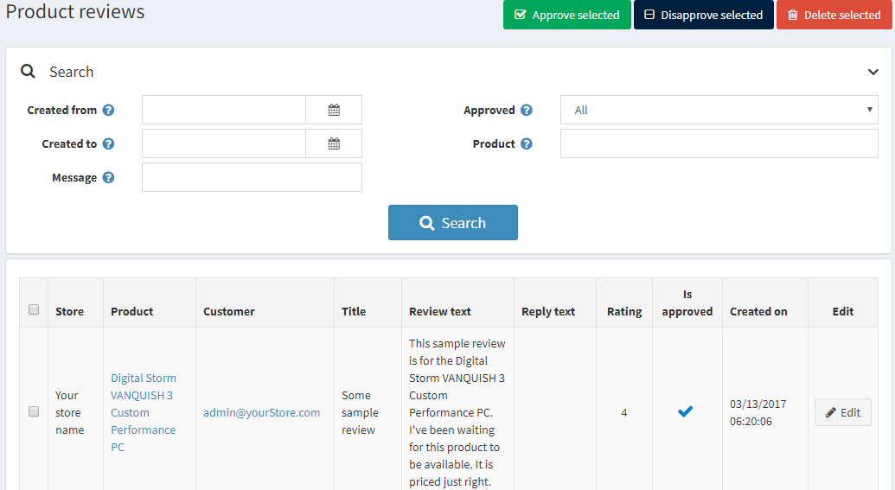

Product reviews
Product reviews are customers' comments on a product. Reviews can also include ratings.
In the public store, reviews are displayed on the product details page. Customers can write reviews for various products. After a review has been written and approved by a store owner, other customers can define whether the review is helpful or not by clicking Yes or No beside the review.
Note
By default, the reviews must be approved by the store owner before they appear in the public store. However, in case a store owner decides that reviews do not have to be approved, this default behavior can be changed. To opt out of the obligatory product reviews' approval, go to Configuration → Settings → Catalog settings and clear the Product reviews must be approved option.
Managing product reviews
To manage product reviews, go to Catalog → Product reviews. The Product reviews window will be displayed as follows:

Search for reviews
You can search for reviews by:
- Date range using Created from and Created to. In the Created from and Created to fields, enter the date range for your search. Alternatively, you can click the dropdown calendar and select the required date range.
- Message. Can be used to find a review by title or text fragment.
- Approved. Can be used to find a review by the "Approved" property.
- Product. Sorts and shows the reviews related to a particular product.
- Store. Allows viewing all reviews of a particular store's products. This field is displayed if you have more than one store.
Approve or disapprove
Select the reviews you want to approve or disapprove and click the Approve selected button or the Disapprove selected button accordingly.
Editing product reviews
To edit a product review, click Edit beside the review. The Edit product review details window will be displayed as follows:

- See the Product for which this review was added. After clicking this field, you will be redirected to the edit product details window, where you can edit the product details.
- See the Store in which this review was written.
- And the Customer who created the review. After clicking this field, you will be redirected to the edit customer details window, where you can edit the details.
- You can edit the review Title.
- And its Text.
- In the Reply text field, you can leave a reply to review; it will be visible in the public store under the review.
- Rating displays the customer rating. It cannot be edited.
- Select the Is approved checkbox to approve the review.
- Created on shows the date and time when the review was created.
Review types
If you have created custom review types, you will see the Review types panel:

In this area, you can view all the additional reviews on the current product. Rating displays the customer rating. No columns in the table can be edited.
For more information on setting up reviews, click see the Product reviews and Review types chapters.